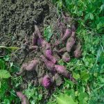

고구마
고구마(학명: Ipomoea batatas)는 메꽃과의 한해살이 뿌리채소로, 주로 전분이 많고 단 맛이 나는 혹줄기를 가진 재배용 작물이다. 꽃은 나팔꽃과 유사한 꽃이 핀다. 씨앗으로도 번식하나 영양뿌리를 얻기 위해 경작할 때에는 씨앗으로 경작하지 않는다. 고구마에서 먹는 부분은 뿌리인데, 고구마는 뿌리에 영양분이 축적되어 둥그렇게 크기가 커지며 이런 종류의 뿌리를 덩이뿌리라고 부른다. 반면 감자에서 먹는 부분은 뿌리가 아니라 줄기이고, 그런 종류의 줄기를 덩이줄기라고 부른다. 여름에 얻는 고구마순으로는 김치를 담가 먹는다.
고구마는 생육적온이 높고 생육기간도 긴 작물이기 때문에 대체로 무상(無霜)기간이 긴 경우에 수량이 증가한다. 고구마의 생육온도 범위는 15～38℃에서 가장 왕성하게 생육하며 괴근의 비대에는 지상부 생육적온 보다 약간 낮은 20～30℃의 지온이 알맞다. 변온은 경엽의 생장을 억제하지만 괴근의 비대는 현저하게 촉진한다. 밭에 묘를 심은 후 뿌리가 내리는 데는 15℃이상의 온도가 필요하다. 온도가 높으면 발근수가 많고 뿌리내리는데 걸리는 날수도 짧아지나 30℃이상에서는 뿌리의 수가 줄어들고 발근일수도 급격히 길어진다. 묘를 심은 후에 지온이 15℃이상 되지 않으면 일찍 심는 효과가 없고 고구마 수도 감소하며 또 너무 온도가 높으면 발생한 뿌리의 내부조직이 굳어져서 생육 및 수량이 나빠진다. 생육중의 온도가 너무 높으면 잎중의 칼리/질소의 비율이 낮아져서 동화산물이 잎에서 덩이뿌리로 전이되는 것을 방해하기 때문에 고구마의 비대가 나빠진다.
고구마 묘를 심은 후에 비가 계속 내리거나 구름이 끼어 일조가 부족하면 덩이뿌리의 형성을 지연시키고 생육기의 일조부족은 광합성을 감소시키며 일조량이 많으면 수량을 증가시킨다. 즉 일조가 부족하면 지상부에서 생산된 물질이 지상부에 이용되고 덩이뿌리로 옮겨져 저장되는 양이 적기 때문에 지상부의 줄기와 잎수량은 오히려 증가되나 고구마 수량은 크게 감수된다.
고구마는 건조에 비교적 강한 특성을 가지고 있으며 토성, 경사도, 지하수위의 위치 등에 크게 영향을 받지 않고 광범위하게 재배가 가능하나 생육시기에 따른 수분의 영향은 매우 크다. 특히 삽식기 전후의 강우량은 활 착을 조장한다. 생육기간 중에 강우량이 많으면 토양이 과습해져 토양통기성이 낮아지고 일조부족과 기온저하를 초래하여 줄기가 도장하며, 줄기마디에서 뿌리발생이 심하여 불리하고 덩이뿌리의 비대 감소를 유발하여 고구마의 건물생산 및 수량이 낮아진다. 수확기때 강우가 많으면 고구마의 품질을 저하시키고 저장력이 약해진다. 수원지방에서 조사한 바에 의하면 묘를 심기 전후 20일 동안에 내리는 강우량은 80㎜까지는 비가 많이 내릴수록 수량이 많았고 그 이상은 오히려 수량이 낮아졌다.
고구마의 생육에 적당한 토양수분은 괴근의 경우 최대용수량의 60～70％가 알맞다. 토양수분이 많으면 고구마 비대가 나빠져서 잎에서 만들어진 동화물질이 고구마로 이동되지 않고 줄기와 잎의 생장에 이용되어 지상부의 생육만 왕성하게 된다. 한편 고구마는 건조에 강한 작물로 알려지고 있으나 토양수분이 적으면 지상부 및 덩이뿌리의 무게가 다같이 감소된다. 건조한 토양에서는 고구마의 모양이 둥글고 전분가가 높은 경향이며, 다습한 토양에서는 고구마가 길고 전분가가 떨어진다. 그러나 과도하게 건조하거나 다습하면 품질은 매우 나빠진다. 대체적으로 삽식후에는 토양수분이 충분하여야 활착 및 초기생육이 좋고 생육후기에는 수분이 많으면 고구마 비대가 억제되므로 배수에 특히 주의할 필요가 있다.
고구마는 지상부가 자라면서 땅 표면을 완전히 덮으므로 한여름에 지온이 올라가는 것이나 토양으로부터 수분이 발산하는 것을 막아 주므로 토양의 건조 및 강우에 의한 토양침식을 억제하는 효과가 다른 작물보다 커서 경사지에도 그 적응성이 높다.
출처 본문 : 농사로 이미지: 구글 이미지
Tab le(s)
| 작형 | 파종기 | 수확기 | 출하기 | 성출하기 |
|---|---|---|---|---|
| 노지재배 | 3월 중~3월 하 | 10월 상~10월 중 | 10월 하~12월 하 | 11월 상~11월 중 |